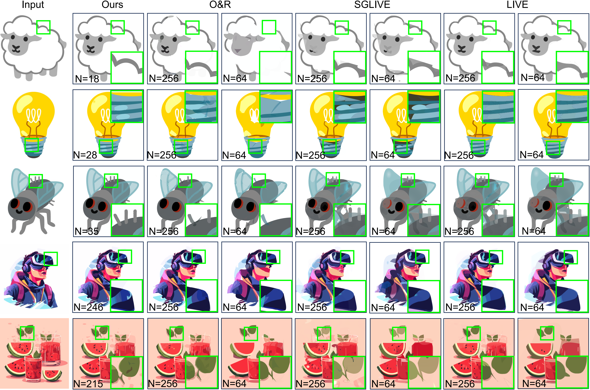

Image vectorization aims to convert raster images to vector ones, allowing for easy scaling and editing. Existing works mainly rely on preset parameters (\ie, a fixed number of paths and control points), ignoring the complexity of the image and posing significant challenges to practical applications. We demonstrate that such an assumption is often incorrect, as the preset paths or control points may be neither essential nor enough to achieve accurate and editable vectorization results.
Based on this key insight, in this paper, we propose AdaVec, an efficient image vectorization method with adaptive parametrization, where the paths and control points can be adjusted dynamically based on the complexity of the input raster image. In particular, we first decompose the input raster image into a set of pure-colored layers that are aligned with human perception. For each layer with varying shape complexity, we propose a novel allocation mechanism to adaptively adjust the control point distribution. We further adopt a differentiable rendering process to compose and optimize the shape and color parameters of each layer iteratively. Extensive experiments demonstrate that AdaVec outperforms the baselines qualitatively and quantitatively, in terms of computational efficiency, vectorization accuracy, and editing flexibility.

The overall pipeline of our image vectorization method. Given an input raster image, we first extract a set of vector paths that are aligned with human perception in the multi-layer decomposition stage. Then, in the control point simplification stage, we propose an adaptive simplification strategy to reduce redundancy in control points along the vector paths and optimize individual control points to avoid intersections. Finally, in the differentiable rendering stage, we compose the optimized layers and adjust the shape and color parameters iteratively to generate the output vectorized image.

Qualitative reconstruction comparison. We compare the effectiveness of AdaVec against O&R, SGLIVE, and LIVE in processing images of varying complexity, evaluating by adjusting the number of paths (N) to 256 and 64. The experiment covers simple images (first three rows) and complex images (last two rows). The key regions are enlarged for better visualization.